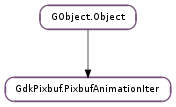

| Subclasses: | GdkPixbuf.PixbufSimpleAnimIter |
|---|
| advance(current_time) | |
| get_delay_time() | |
| get_pixbuf() | |
| on_currently_loading_frame() |
None
None
Bases: GObject.Object
An opaque struct representing an iterator which points to a certain position in an animation.
| Parameters: | current_time (GLib.TimeVal or None) – current time |
|---|---|
| Returns: | True if the image may need updating |
| Return type: | bool |
Possibly advances an animation to a new frame. Chooses the frame based on the start time passed to GdkPixbuf.PixbufAnimation.get_iter ().
current_time would normally come from GLib.get_current_time (), and must be greater than or equal to the time passed to GdkPixbuf.PixbufAnimation.get_iter (), and must increase or remain unchanged each time GdkPixbuf.PixbufAnimationIter.get_pixbuf () is called. That is, you can’t go backward in time; animations only play forward.
As a shortcut, pass None for the current time and GLib.get_current_time () will be invoked on your behalf. So you only need to explicitly pass current_time if you’re doing something odd like playing the animation at double speed.
If this function returns False, there’s no need to update the animation display, assuming the display had been rendered prior to advancing; if True, you need to call GdkPixbuf.PixbufAnimationIter.get_pixbuf () and update the display with the new pixbuf.
| Returns: | delay time in milliseconds (thousandths of a second) |
|---|---|
| Return type: | int |
Gets the number of milliseconds the current pixbuf should be displayed, or -1 if the current pixbuf should be displayed forever. GLib.timeout_add () conveniently takes a timeout in milliseconds, so you can use a timeout to schedule the next update.
| Returns: | the pixbuf to be displayed |
|---|---|
| Return type: | GdkPixbuf.Pixbuf |
Gets the current pixbuf which should be displayed; the pixbuf might not be the same size as the animation itself (GdkPixbuf.PixbufAnimation.get_width (), GdkPixbuf.PixbufAnimation.get_height ()). This pixbuf should be displayed for GdkPixbuf.PixbufAnimationIter.get_delay_time () milliseconds. The caller of this function does not own a reference to the returned pixbuf; the returned pixbuf will become invalid when the iterator advances to the next frame, which may happen anytime you call GdkPixbuf.PixbufAnimationIter.advance (). Copy the pixbuf to keep it (don’t just add a reference), as it may get recycled as you advance the iterator.
| Returns: | True if the frame we’re on is partially loaded, or the last frame |
|---|---|
| Return type: | bool |
Used to determine how to respond to the area_updated signal on GdkPixbuf.PixbufLoader when loading an animation. area_updated is emitted for an area of the frame currently streaming in to the loader. So if you’re on the currently loading frame, you need to redraw the screen for the updated area.